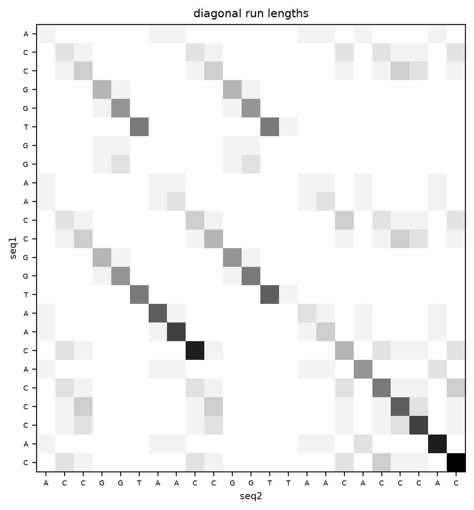
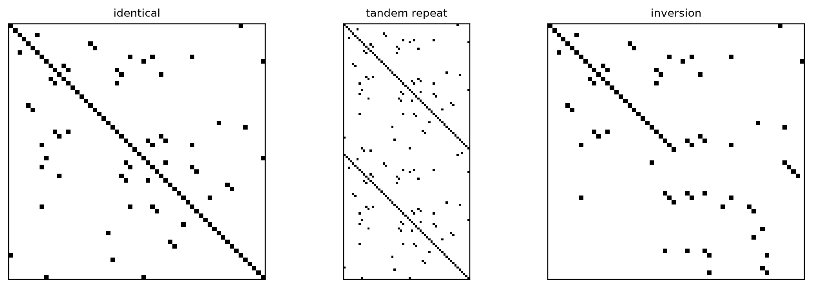
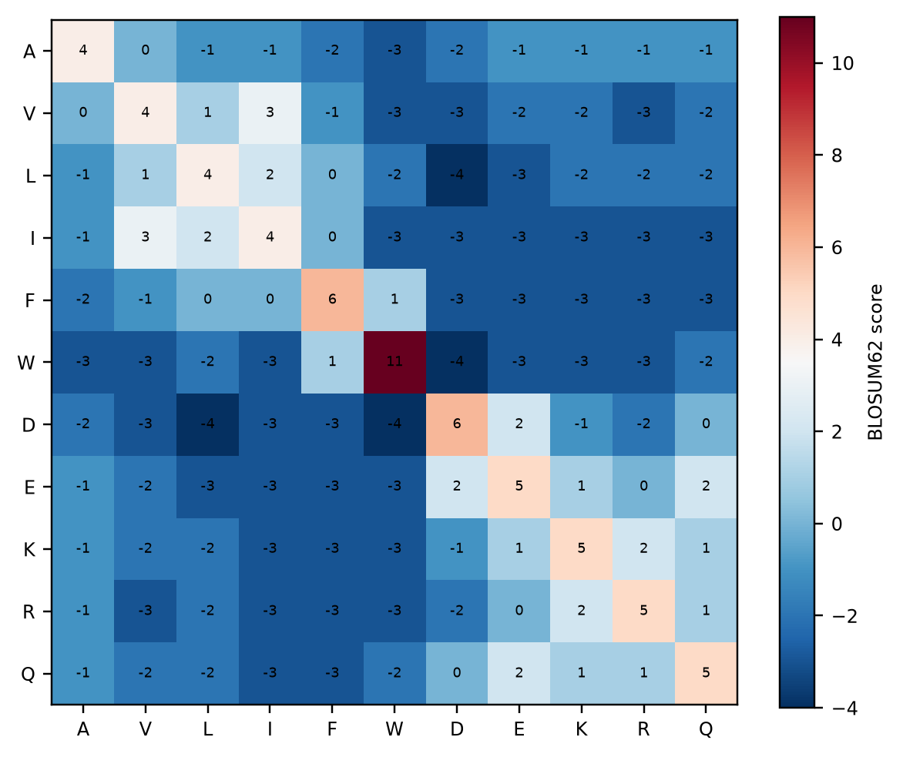
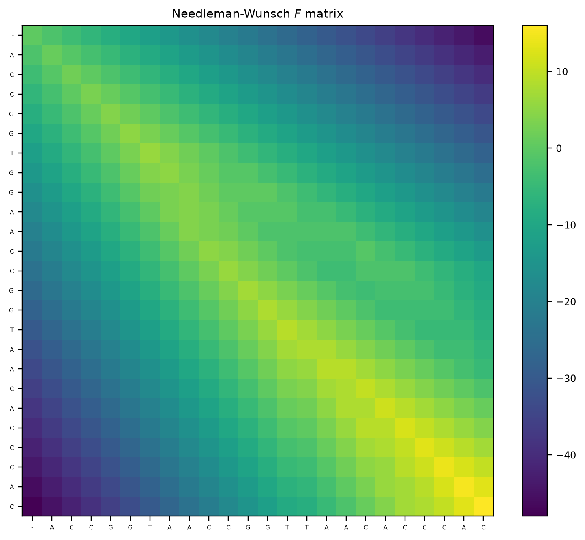
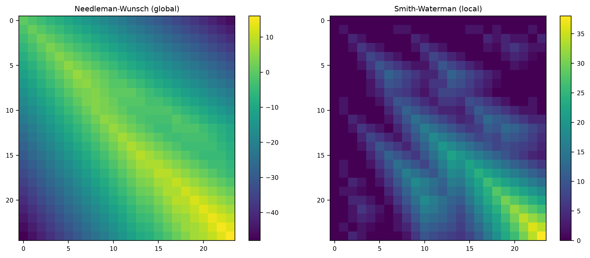

binary 2 symbols -> 1.00 bits per position
DNA/RNA 4 symbols -> 2.00 bits per position
protein 20 symbols -> 4.32 bits per positionBiological data and sequence alignment
Lviv University
Source
This lecture follows An Introduction to Applied Bioinformatics (2nd ed.)
J. Gregory Caporaso — https://readiab.org Licensed CC BY-NC-SA 4.0
Chapters 1–3: Introduction, Biological Information, Pairwise sequence alignment.
We use scikit-bio (the book’s library) and Biopython (the one you are more likely to meet) side by side.
Why this belongs in a data-analytics course
Sequence alignment is a dynamic programming problem — the same technique as edit distance, and a close relative of the DAG scheduling from the Big Data lectures.
It is also a case study in a recurring theme: an exact algorithm that is provably optimal and too slow at scale, which the field abandoned for heuristics.
Four questions
Information flow
\[\text{DNA} \xrightarrow{\ \text{transcription}\ } \text{RNA} \xrightarrow{\ \text{translation}\ } \text{protein}\]
Every step is a transformation of a string, which is why so much of bioinformatics is string algorithms.
Information content
A binary digit distinguishes 2 states and carries 1 bit. A DNA base distinguishes 4, so it carries
\[\log_2 4 = 2 \text{ bits}\]
binary 2 symbols -> 1.00 bits per position
DNA/RNA 4 symbols -> 2.00 bits per position
protein 20 symbols -> 4.32 bits per positionThe human genome is about \(3.2 \times 10^9\) bases — roughly 800 MB if packed at 2 bits per base. Uncompressed as ASCII it is 3.2 GB, which is why every genomics format has a 2-bit packing mode.
Why codons are three bases long
Protein uses 20 amino acids. How many DNA bases must encode one?
| codon length | combinations | enough for 20? |
|---|---|---|
| 1 | \(4^1 = 4\) | no |
| 2 | \(4^2 = 16\) | no |
| 3 | \(4^3 = 64\) | yes, with room to spare |
Three is the smallest that works. The 44 spare combinations are not wasted: the code is degenerate, with several codons per amino acid, plus three stop codons.
That degeneracy is why a DNA substitution may leave the protein unchanged — a synonymous mutation.
Translating in practice
DNA : ATGGCCATTGTAATGGGCCGCTGAAAGGGTGCCCGATAG
transcribed: AUGGCCAUUGUAAUGGGCCGCUGAAAGGGUGCCCGAUAG
protein : MAIVMGR*KGAR*
complement : CTATCGGGCACCCTTTCAGCGGCCCATTACAATGGCCATThe * marks a stop codon. Note translate() silently assumes reading frame 1 — a DNA sequence has six reading frames (three forward, three reverse), and choosing the wrong one produces confident nonsense.
FASTA and FASTQ
FASTA — a header line and the sequence. No quality information.
>NP_000508.1 hemoglobin subunit alpha [Homo sapiens]
MVLSPADKTNVKAAWGKVGAHAGEYGAEALERMFLSFPTTKTYFPHF...FASTQ — adds a per-base quality score, which is what a sequencer actually produces:
@read_001
GGTCTTCGCTAGGCTTTCATCGGG
+
IIIIIIIIIIIIIIIIIIII9<<<Quality is Phred-encoded: \(Q = -10 \log_{10} P(\text{error})\), offset by 33 into printable ASCII. I is \(Q=40\), i.e. a 1-in-10 000 error probability; 9 is \(Q=24\).
Two libraries, same idea
scikit-bio 0.7.4
sequence : ACCGGTGGAACCGGTAACACCCAC
GC content : 0.625
reverse comp : GTGGGTGTTACCGGTTCCACCGGT
frequencies : {'A': 7, 'C': 9, 'G': 6, 'T': 2}scikit-bio models a sequence as a typed object that knows its alphabet — so DNA("ACGU") is an error, not a silent bug.
Turning a sequence into features
A \(k\)-mer is a substring of length \(k\). Sliding a window over a sequence of length \(n\) yields \(n - k + 1\) of them.
k=3: 10 k-mers, 9 distinct -> ['ACC', 'CCG', 'CGG', 'GGT'] ...
k=5: 8 k-mers, 8 distinct -> ['ACCGG', 'CCGGT', 'CGGTG', 'GGTGG'] ...\(k\)-mers turn a sequence into a bag of features — a vector you can index, hash, or feed to a classifier. Every fast alignment method in the next lecture is built on them, and so is the taxonomy classifier.
DNA has two strands, and your data only gives you one
A sequencing read may come from either strand. The same physical locus therefore appears in your data in two different forms, and they do not look alike:
as read : ATGGCGTTAACGTAA
complement : TACCGCAATTGCATT
reverse comp : TTACGTTAACGCCATThe reverse complement is the same molecule read from the other end. An alignment tool that does not try both orientations will report no hit for a perfectly good match — and report it as absence, not as failure.
Where this bites
blastn searches both strands by default; a hand-rolled \(k\)-mer index does not, unless you add the reverse complement of every query or canonicalise each \(k\)-mer to min(kmer, revcomp(kmer)).blastx enumerates for you.Ambiguity codes
Real sequence data contains positions the instrument could not resolve. IUPAC gives each possibility set a letter:
| code | means | code | means | |
|---|---|---|---|---|
N |
any base | R |
A or G (purine) |
|
W |
A or T |
Y |
C or T (pyrimidine) |
|
S |
C or G |
K |
G or T |
So the practical DNA alphabet has 15 letters plus a gap, and protein sequences add X (unknown), B, Z, and * for a stop.
This is why a typed sequence class earns its keep: DNA("ACGN") is valid, DNA("ACGU") is an error, and code that assumes set(seq) <= {"A","C","G","T"} will fail on the first real FASTA file it meets — usually silently, by dropping reads.
Three kinds of mutation
Over evolutionary time a DNA sequence changes, mostly through errors in replication:
Two sequences descended from a common ancestor are homologs.
Because we almost never have the ancestral sequence, we cannot tell an insertion in one lineage from a deletion in the other — hence the compound term indel.
Hamming distance, and where it breaks
The obvious similarity measure counts positions that differ:
def hamming(a, b):
if len(a) != len(b):
raise ValueError("Hamming distance needs equal lengths")
return sum(x != y for x, y in zip(a, b))
ref = "ACCGGTGGAACCGGTAACACCCAC"
sub = ref[:15] + "T" + ref[16:] # one substitution, mid-sequence
ins = ref[:1] + "T" + ref[1:-1] # one insertion near the start
print("reference :", ref)
print("one substitution :", sub, "-> Hamming", hamming(ref, sub))
print("one insertion :", ins, "-> Hamming", hamming(ref, ins))
print()
print(f"the insertion differs at {hamming(ref, ins)} of {len(ref)} positions "
f"({100 * hamming(ref, ins) / len(ref):.0f}%)")reference : ACCGGTGGAACCGGTAACACCCAC
one substitution : ACCGGTGGAACCGGTTACACCCAC -> Hamming 1
one insertion : ATCCGGTGGAACCGGTAACACCCA -> Hamming 14
the insertion differs at 14 of 24 positions (58%)A single substitution costs 1. A single insertion costs far more — here 14 of 24 positions — because everything downstream is now compared against the wrong partner. The two sequences are one mutation apart and Hamming calls them barely related.
Hamming distance cannot express indels at all. That is the entire reason alignment exists: we need to decide where the gaps go before we can compare.
A hypothesis, not a fact
The goal of pairwise sequence alignment is, given two sequences, to generate a hypothesis about which sequence positions derived from a common ancestral position.
We build that hypothesis by inserting gaps to maximise similarity — a maximum parsimony argument, an application of Occam’s razor: assume the fewest mutation events.
An alignment from BLAST is a hypothesis in exactly the same sense as one you sketch by hand. It can be wrong, and for distant sequences it often is.
As a table
An alignment is a table: rows are sequences, columns are positions. All rows have the same length by construction, and each column is a claim that those positions share an ancestor.
Find the long diagonals
Build a matrix with one sequence on each axis, mark cells where the characters match, and look for long diagonal runs — each run is a conserved stretch.
seq1, seq2 = "ACCGGTGGAACCGGTAACACCCAC", "ACCGGTAACCGGTTAACACCCAC"
M = np.array([[1 if a == b else 0 for b in seq2] for a in seq1])
# length of the diagonal run ending at each cell
D = M.copy()
for i in range(1, D.shape[0]):
for j in range(1, D.shape[1]):
if M[i, j]:
D[i, j] = D[i - 1, j - 1] + 1
print("longest diagonal run:", D.max())longest diagonal run: 10f, ax = plt.subplots(figsize=(6, 6))
ax.imshow(D, cmap="Greys", interpolation="nearest")
ax.set_xticks(range(len(seq2)), list(seq2), fontsize=6)
ax.set_yticks(range(len(seq1)), list(seq1), fontsize=6)
ax.set_xlabel("seq2"); ax.set_ylabel("seq1")
ax.set_title("diagonal run lengths")
plt.tight_layout(); plt.show()
The dark diagonal segments are the conserved blocks. You can read an alignment off them by eye — but nothing here chooses between competing diagonals, and that is the whole difficulty.
Dot plots reveal structure no score can
def dotplot(ax, a, b, k=3, title=""):
A = [a[i:i+k] for i in range(len(a)-k+1)]
B = [b[i:i+k] for i in range(len(b)-k+1)]
M = np.array([[1 if x == y else 0 for y in B] for x in A])
ax.imshow(M, cmap="Greys", interpolation="nearest")
ax.set_title(title, fontsize=9); ax.set_xticks([]); ax.set_yticks([])
core = "".join(np.random.default_rng(1).choice(list("ACGT"), 60))
f, axs = plt.subplots(1, 3, figsize=(10, 3.4))
dotplot(axs[0], core, core, title="identical")
dotplot(axs[1], core + core, core, title="tandem repeat")
rc = core.translate(str.maketrans("ACGT", "TGCA"))[::-1]
dotplot(axs[2], core[:30] + rc[:30], core, title="inversion")
plt.tight_layout(); plt.show()
A single alignment score collapses all of this into one number. The dot plot is how you notice that a “poor alignment” is actually a rearrangement.
Two bad assumptions
All scoring schemes have limitations, and you should remember that when you’re working with software that generates alignments for you.
The rest of this lecture is the two fixes.
Scores from observed substitution frequencies
A substitution matrix gives a score for every pair of residues, derived from how often they actually replace one another in alignments of related proteins:
\[S_{ij} = \frac{1}{\lambda}\log\frac{p_{ij}}{q_i q_j}\]
a log-odds ratio of the observed joint frequency against what independence would predict. Positive means “more often than chance” — a conservative substitution.
| A | V | L | I | F | W | D | E | K | R | Q | |
|---|---|---|---|---|---|---|---|---|---|---|---|
| A | 4 | 0 | -1 | -1 | -2 | -3 | -2 | -1 | -1 | -1 | -1 |
| V | 0 | 4 | 1 | 3 | -1 | -3 | -3 | -2 | -2 | -3 | -2 |
| L | -1 | 1 | 4 | 2 | 0 | -2 | -4 | -3 | -2 | -2 | -2 |
| I | -1 | 3 | 2 | 4 | 0 | -3 | -3 | -3 | -3 | -3 | -3 |
| F | -2 | -1 | 0 | 0 | 6 | 1 | -3 | -3 | -3 | -3 | -3 |
| W | -3 | -3 | -2 | -3 | 1 | 11 | -4 | -3 | -3 | -3 | -2 |
| D | -2 | -3 | -4 | -3 | -3 | -4 | 6 | 2 | -1 | -2 | 0 |
| E | -1 | -2 | -3 | -3 | -3 | -3 | 2 | 5 | 1 | 0 | 2 |
| K | -1 | -2 | -2 | -3 | -3 | -3 | -1 | 1 | 5 | 2 | 1 |
| R | -1 | -3 | -2 | -3 | -3 | -3 | -2 | 0 | 2 | 5 | 1 |
| Q | -1 | -2 | -2 | -3 | -3 | -2 | 0 | 2 | 1 | 1 | 5 |
Read the diagonal: identity scores differ by residue — tryptophan (W) scores 11 because it is rare and rarely substituted, alanine (A) only 4. And L/I scores +2 despite being a mismatch: chemically they are interchangeable.
f, ax = plt.subplots(figsize=(5.5, 4.5))
im = ax.imshow(sub.values, cmap="RdBu_r", vmin=-4, vmax=11)
ax.set_xticks(range(len(aas)), aas); ax.set_yticks(range(len(aas)), aas)
for i in range(len(aas)):
for j in range(len(aas)):
ax.text(j, i, sub.values[i, j], ha="center", va="center", fontsize=6)
plt.colorbar(im, label="BLOSUM62 score")
plt.tight_layout(); plt.show()
The hydrophobic block (A V L I F W) is blue-to-neutral among itself and red against the charged block (D E K R) — the matrix has learned chemistry from evolution, without being told any.
Match the matrix to the distance you expect
A substitution matrix is built from sequences at a particular divergence, and it is most sensitive at roughly that divergence. Using one tuned for close relatives to find remote ones is a common and invisible mistake.
| matrix | built from | use for |
|---|---|---|
| BLOSUM80 | blocks \(\ge\) 80% identical | closely related sequences |
| BLOSUM62 | blocks \(\ge\) 62% identical | the general-purpose default |
| BLOSUM45 | blocks \(\ge\) 45% identical | remote homology |
The BLOSUM numbering runs the opposite way to PAM’s. BLOSUM62 is built from sequences at least 62% identical; PAM250 is extrapolated out to 250 accepted point mutations per 100 residues, so it is the distant one. High BLOSUM number = close; high PAM number = distant. They are easy to swap by accident and the result is simply reduced sensitivity, with no error.
Gap penalties are part of the choice
BLOSUM62 with \((-11, -1)\) is a package, tuned together. Changing the matrix without changing the gap penalties — or vice versa — gives a scoring scheme nobody calibrated. This is one reason percent identity is not comparable across tools.
The recurrence
Let \(F_{ij}\) be the best score for aligning the first \(i\) characters of \(s_1\) with the first \(j\) of \(s_2\). Then
\[F_{ij} = \max \begin{cases} F_{i-1,j-1} + s(a_i, b_j) & \text{align } a_i \text{ with } b_j \\ F_{i-1,j} + d & \text{gap in } s_2 \\ F_{i,j-1} + d & \text{gap in } s_1 \end{cases}\]
with \(F_{0j} = j \cdot d\) and \(F_{i0} = i \cdot d\).
This is the same shape as edit distance. Each cell depends only on three already-computed neighbours, which is precisely what makes a DP table fillable in one pass.
\(F\) and \(T\)
You need \(T\) because \(F_{mn}\) tells you the score but not the alignment. Walking backwards through \(T\) from the bottom-right corner reconstructs it.
Some implementations skip \(T\) and recompute the choice from neighbouring \(F\) values — saving memory at the cost of arithmetic.
def needleman_wunsch(s1, s2, match=1, mismatch=-1, gap=-2):
n, m = len(s1), len(s2)
F = np.zeros((n + 1, m + 1))
T = np.empty((n + 1, m + 1), dtype=object)
F[0, :] = np.arange(m + 1) * gap
F[:, 0] = np.arange(n + 1) * gap
T[0, 1:] = "left"
T[1:, 0] = "up"
for i in range(1, n + 1):
for j in range(1, m + 1):
s = match if s1[i - 1] == s2[j - 1] else mismatch
options = {
"diag": F[i - 1, j - 1] + s,
"up": F[i - 1, j] + gap,
"left": F[i, j - 1] + gap,
}
T[i, j] = max(options, key=options.get)
F[i, j] = options[T[i, j]]
return F, Tdef traceback(s1, s2, T):
i, j = len(s1), len(s2)
a1, a2 = [], []
while i > 0 or j > 0:
move = T[i, j]
if move == "diag":
a1.append(s1[i - 1]); a2.append(s2[j - 1]); i -= 1; j -= 1
elif move == "up":
a1.append(s1[i - 1]); a2.append("-"); i -= 1
else:
a1.append("-"); a2.append(s2[j - 1]); j -= 1
return "".join(reversed(a1)), "".join(reversed(a2))
F, T = needleman_wunsch(seq1, seq2)
a1, a2 = traceback(seq1, seq2, T)
print("score:", F[-1, -1])
print(a1)
print("".join("|" if x == y else " " for x, y in zip(a1, a2)))
print(a2)score: 16.0
ACCGGTGGAACCGG-TAACACCCAC
|||||| |||||| ||||||||||
ACCGGT--AACCGGTTAACACCCAC
The optimal path runs from the top-left to the bottom-right corner. Note that every cell is computed — the algorithm has no way to know in advance which region the optimal path will use, and that is exactly the property the heuristics of the next lecture give up.
from skbio.alignment import global_pairwise_align_nucleotide
from Bio.Align import PairwiseAligner
msa, sk_score, _ = global_pairwise_align_nucleotide(
DNA(seq1), DNA(seq2), gap_open_penalty=2, gap_extend_penalty=2,
match_score=1, mismatch_score=-1,
)
bio = PairwiseAligner(mode="global", match_score=1, mismatch_score=-1,
open_gap_score=-2, extend_gap_score=-2)
print("ours :", F[-1, -1])
print("scikit-bio :", sk_score)
print("Biopython :", bio.align(seq1, seq2).score)ours : 16.0
scikit-bio : 16.0
Biopython : 16.0Three implementations, one number. Writing the algorithm yourself is how you learn what the library is doing; using the library is how you get it fast and correct.
When global is the wrong question
Global alignment forces the entire length of both sequences into correspondence. That is right when the sequences are the same kind of thing — two hemoglobin proteins.
It is wrong when you want to find a short conserved domain inside two otherwise unrelated proteins, or match a 100 bp read against a chromosome. Forcing the ends to align buries the real signal in gap penalties.
Two changes, and that is all
\[F_{ij} = \max \begin{cases} 0 & \leftarrow \textbf{the only new term} \\ F_{i-1,j-1} + s(a_i,b_j) \\ F_{i-1,j} + d \\ F_{i,j-1} + d \end{cases}\]
def smith_waterman(s1, s2, match=2, mismatch=-3, gap=-2):
n, m = len(s1), len(s2)
F = np.zeros((n + 1, m + 1))
T = np.empty((n + 1, m + 1), dtype=object)
best, best_pos = 0, (0, 0)
for i in range(1, n + 1):
for j in range(1, m + 1):
s = match if s1[i - 1] == s2[j - 1] else mismatch
options = {
"diag": F[i - 1, j - 1] + s,
"up": F[i - 1, j] + gap,
"left": F[i, j - 1] + gap,
"stop": 0,
}
T[i, j] = max(options, key=options.get)
F[i, j] = options[T[i, j]]
if F[i, j] > best:
best, best_pos = F[i, j], (i, j)
return F, T, best, best_pos
Fl, Tl, best, pos = smith_waterman(seq1, seq2)
print("best local score:", best, "at", pos)best local score: 38.0 at (24, 23)
The global matrix has a strong negative gradient into the corners — the cost of forcing the ends to align. The local matrix is zero over most of its area, with score concentrated along the conserved block. That flat floor is the clamp doing its work.
Global and local are not the only options
Everything is the same recurrence. What changes is how the edges are initialised and where the traceback starts and stops.
| mode | initialise row/col 0 | traceback from | for |
|---|---|---|---|
| global (NW) | \(id\), \(jd\) | corner \(F_{mn}\) | two whole, comparable sequences |
| local (SW) | 0, plus clamp at 0 | max cell, stop at 0 | a shared domain inside longer sequences |
| semi-global | 0 | max of last row/col | a short read inside a long reference |
| overlap | 0 | max of last row/col | suffix-prefix, for assembly |
Semi-global is the one that matters most in practice and is the one students most often get wrong by reaching for local. Free end gaps mean a 150 bp read can align fully into a 3 Gb chromosome without paying for the 3 Gb it does not cover — but the read is still aligned end to end, so a truncated match is visible as a truncated match rather than quietly trimmed away, which is exactly what local alignment would do.
In Biopython this is mode="global" plus target_end_gap_score = 0 and query_end_gap_score = 0.
The dependence structure decides everything
Each cell needs three already-computed neighbours: \((i-1,j-1)\), \((i-1,j)\), \((i,j-1)\). So no cell on a row can start before the cell to its left is done — rows are inherently sequential.
But every cell on an anti-diagonal \(i + j = c\) depends only on cells in \(c-1\) and \(c-2\). The cells within one anti-diagonal are mutually independent and can all be computed at once.
\[\text{work} = \Theta(mn) \qquad \text{span} = \Theta(m + n) \qquad \text{parallelism} = \Theta\!\left(\tfrac{mn}{m+n}\right)\]
For \(m = n\) that is \(\Theta(n/2)\) — substantial, and available for free once you look at the dependence graph the right way.
This is the same analysis as lecture 3
Work, span, and the ratio between them. The DP table is a DAG, the anti-diagonals are its levels, and the span is the critical path. Striped SIMD implementations (Farrar’s SSE Smith-Waterman, the SSW library) are exactly this idea applied at register width — which is most of the 669\(\times\) gap we measured between Python and a C aligner.
One event, not five
A 5-base deletion is a single mutational event. Charging \(5d\) for it, as a linear penalty does, says it is five times as unlikely as a 1-base deletion — which is biologically wrong.
Affine penalties separate the two costs:
\[\text{gap cost} = g_{\text{open}} + (L - 1) \cdot g_{\text{extend}}\]
with \(g_{\text{open}} \gg g_{\text{extend}}\) — typically \(-11\) and \(-1\) for BLOSUM62 protein alignment.
The result: alignments with few, longer gaps rather than many scattered ones, which matches how indels actually happen.
p1 = "HEAGAWGHEE"
p2 = "PAWHEAE"
for og, eg, label in [(-2, -2, "linear (open=extend=-2)"),
(-11, -1, "affine (open=-11, extend=-1)")]:
al = PairwiseAligner(mode="global", open_gap_score=og, extend_gap_score=eg)
al.substitution_matrix = blosum62
r = al.align(p1, p2)[0]
print(f"{label} score={r.score:6.1f}")
print(" " + str(r).replace("\n", "\n "))linear (open=extend=-2) score= 22.0
target 0 HEAGAWGHE-E 10
0 -.|--|-||-| 11
query 0 -PA--W-HEAE 7
affine (open=-11, extend=-1) score= 2.0
target 0 HEAGAWGHEE 10
0 ---.||...| 10
query 0 ---PAWHEAE 7
Same sequences, same substitution matrix — different gap model, and the alignment reorganises.
\(O(mn)\), and you can feel it
Both algorithms fill an \(m \times n\) table, doing constant work per cell. Time and memory are both quadratic.
import timeit
rng = np.random.default_rng(0)
aligner = PairwiseAligner(mode="global", match_score=1, mismatch_score=-1,
open_gap_score=-2, extend_gap_score=-0.5)
print(" n time cells time/cell")
prev = None
for n in (200, 400, 800, 1600):
a = "".join(rng.choice(list("ACGT"), n))
b = "".join(rng.choice(list("ACGT"), n))
t = min(timeit.repeat(lambda: aligner.align(a, b).score, number=5, repeat=3)) / 5
ratio = f" ({t / prev:.1f}x)" if prev else ""
print(f" {n:<6} {t * 1000:7.2f} ms {n * n:>9,} {t / n**2 * 1e9:5.1f} ns{ratio}")
prev = t n time cells time/cell
200 0.33 ms 40,000 8.3 ns
400 2.04 ms 160,000 12.7 ns (6.1x)
800 8.74 ms 640,000 13.6 ns (4.3x)
1600 34.79 ms 2,560,000 13.6 ns (4.0x)Doubling the length quadruples the time, and the time per cell stays flat. That is the definition of \(O(n^2)\).
from skbio.alignment import local_pairwise_align_nucleotide
s1 = "GGTCTTCGCTAGGCTTTCATCGGGTTCGGCATCTACTCTGAGTTACTACG"
s2 = "GGTCTTCAGGCTTTCATCGGGAACGGCATCTCTGAGTTACTACC"
d1, d2 = DNA(s1), DNA(s2)
t_skbio = min(timeit.repeat(
lambda: local_pairwise_align_nucleotide(d1, d2, gap_open_penalty=8, gap_extend_penalty=1),
number=3, repeat=3)) / 3
al = PairwiseAligner(mode="local", match_score=2, mismatch_score=-3,
open_gap_score=-8, extend_gap_score=-1)
t_bio = min(timeit.repeat(lambda: al.align(s1, s2).score, number=300, repeat=3)) / 300
_, sk_score, _ = local_pairwise_align_nucleotide(d1, d2, gap_open_penalty=8, gap_extend_penalty=1)
print(f" scikit-bio (pure Python) : {t_skbio * 1000:8.3f} ms score {sk_score}")
print(f" Biopython (C) : {t_bio * 1000:8.3f} ms score {al.align(s1, s2).score}")
print(f" speedup : {t_skbio / t_bio:,.0f}x") scikit-bio (pure Python) : 17.680 ms score 56.0
Biopython (C) : 0.025 ms score 56.0
speedup : 716xSame algorithm, same answer, ~700x apart. The asymptotic complexity is identical — what differs is the constant, and at this scale the constant is what you feel.
The \(T\) matrix is the expensive part
Time is \(O(mn)\), and so is space — you keep the whole traceback matrix.
n= 1,000: two rows 0.02 MB full matrix 0.01 GB
n= 10,000: two rows 0.16 MB full matrix 0.80 GB
n=100,000: two rows 1.60 MB full matrix 80.00 GBFor the score alone you only need the previous row — \(O(\min(m,n))\) space. But then you cannot trace back.
Hirschberg’s algorithm recovers the alignment in linear space by divide and conquer: find where the optimal path crosses the middle column, then recurse on both halves. It doubles the time and reduces space from \(O(mn)\) to \(O(\min(m,n))\) — which is what makes whole-chromosome alignment possible at all.
If you already know the answer is near the diagonal
When two sequences are similar and of similar length, the optimal path never strays far from the main diagonal. So compute only a band of width \(2w+1\) around it:
\[O(mn) \longrightarrow O(mw)\]
For \(w \ll n\) this is effectively linear. It is used everywhere in read mapping, where a 150 bp read is known to align end-to-end with few indels.
The catch, as always with a heuristic: if the true alignment contains an indel larger than \(w\), the band excludes it and you get a confidently wrong answer. Tools pick \(w\) from the expected indel distribution — and get it wrong for structural variants.
Why you would want to
Most of what you actually want to know needs a family, not a pair:
A multiple sequence alignment (MSA) is a matrix: one row per sequence, gaps inserted so that columns are hypotheses about common ancestral positions — the same claim as before, now across \(N\) sequences at once.
The recurrence generalises; the cost explodes
Dynamic programming extends to \(N\) sequences directly: an \(N\)-dimensional table, where each cell now looks back at \(2^N - 1\) predecessors instead of 3.
\[O(n^N \cdot 2^N)\]
For \(N = 5\) sequences of length 200 that is already \(\sim10^{13}\) cell computations. For a Pfam family of 10 000 sequences it is not a number worth writing down.
And this is not merely an inefficient formulation: multiple sequence alignment under the sum-of-pairs objective is NP-hard (Wang & Jiang 1994). There is no polynomial algorithm to be found.
The familiar shape
Optimal and unusable, again — exactly as with scheduling in the big-data lectures. And the response is the same one: a greedy algorithm with no guarantee, plus empirical evidence that it is good enough.
The greedy heuristic everybody uses
This is Clustal, MUSCLE and MAFFT. It is \(O(N^2 n^2)\) rather than exponential, and it is what produced essentially every alignment in every paper you will read.
The defining weakness of progressive alignment
A gap placed early, when only two sequences were visible, is never revisited — later sequences must align around a decision made without them. An early mistake propagates to the whole family.
Mitigations are iterative rather than principled: MUSCLE and MAFFT re-estimate the guide tree from the alignment and realign; consistency-based methods (T-Coffee, ProbCons) score a pairwise alignment by how well it agrees with the others before committing.
Practical consequence: the guide tree shapes the alignment, and the alignment is then used to estimate a phylogeny. Inferring a tree from an alignment built on a tree is circular, and the circularity is rarely acknowledged.
Columns are not equally trustworthy
trimAl, Gblocks) to drop ambiguous columns before tree-building.This is the same selective-inference problem that returns in Bio 4: a quantity estimated from the data is then treated as fixed by the analysis that follows.
Why exact alignment does not scale to search
Aligning two 1 kb sequences is \(10^6\) cells — instant. But the usual task is not aligning two sequences; it is searching one against a database.
GenBank holds on the order of \(10^{12}\) bases. A single full Smith-Waterman query against it is \(\sim10^{15}\) cell computations.
At the ~5 ns per cell we just measured, that is over a month — for one query.
This is the gap that the next lecture fills: give up the guarantee of optimality, use \(k\)-mer seeds to skip almost all of the matrix, and get an answer in seconds. That is what BLAST is.
Summary
| idea | result |
|---|---|
| DNA as a base-4 code | 2 bits/base; codons must be 3 long |
| alignment | a hypothesis about shared ancestry |
| naive diagonals | finds conserved blocks, cannot choose between them |
| substitution matrices | scores learned from observed evolution |
| Needleman-Wunsch | optimal global alignment, DP, \(O(mn)\) |
| Smith-Waterman | optimal local alignment: clamp at 0 |
| affine gaps | one indel event, not \(L\) of them |
| complexity | \(O(mn)\) — measured, and fatal for database search |
Optimal and unusable
Needleman-Wunsch and Smith-Waterman are provably optimal given a scoring scheme. They are also, at database scale, unusable — and the field responded by abandoning optimality rather than waiting for faster computers.
That trade recurs throughout this course: greedy list scheduling instead of optimal scheduling, approximate nearest neighbours instead of exact ones, sampling instead of global state.
Be skeptical of automated approaches to solve complex problems.
Try these
match, mismatch and gap in needleman_wunsch and watch the alignment change. Can you find parameters that produce a biologically silly result?needleman_wunsch to return only the score, not \(T\). How much memory does that save for two 10 kb sequences?Bio.Entrez), then human and E. coli. At what evolutionary distance does the alignment stop being convincing?needleman_wunsch against Biopython on the same input. How much of the ~700x gap is Python, and how much is the algorithm?Sources
Homology search and classification
\(O(mn)\) per comparison against a \(10^{12}\)-base database does not work. The next lecture is about what to do instead: